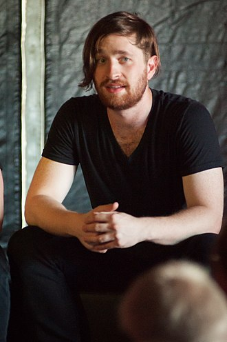

Imagine Dragons is an American pop rock band from Las Vegas, Nevada,
consisting of lead vocalist Dan Reynolds, lead guitarist Wayne Sermon
bassist Ben McKee, and drummer Daniel Platzman.
The band first gained exposure with the release of their single "It's time"
followed by their award-winning debut studio album Night Visions (2012), which resulted in the chart-topping singles
"Radioactive" and
"Demons".
 Daniel Coulter Reynolds (born July 14, 1987) is an American singer, songwriter,
and record producer. He is the lead vocalist and only remaining original member of the pop rock band Imagine Dragons. Reynolds also released an EP in 2011,
titled Egyptian – EP, as a duo with his wife Aja Volkman under the moniker Egyptian. He is a recipient of the Songwriters Hall of Fame Hal David Starlight Award.
Reynolds was initially reluctant to become a professional musician, partially because future bandmate Wayne Sermon had once told him: "Don't do music because you want to do music
- do music if you want to be bored for the rest of your life".
Daniel Coulter Reynolds (born July 14, 1987) is an American singer, songwriter,
and record producer. He is the lead vocalist and only remaining original member of the pop rock band Imagine Dragons. Reynolds also released an EP in 2011,
titled Egyptian – EP, as a duo with his wife Aja Volkman under the moniker Egyptian. He is a recipient of the Songwriters Hall of Fame Hal David Starlight Award.
Reynolds was initially reluctant to become a professional musician, partially because future bandmate Wayne Sermon had once told him: "Don't do music because you want to do music
- do music if you want to be bored for the rest of your life".
Daniel Wayne "Wing" Sermon (born June 15, 1984) is an American musician, songwriter, and record producer.
He is the lead guitarist for the pop rock band Imagine Dragons. Wayne Sermon first met Dan Reynolds after hearing him perform at a
club in Utah and approaching him afterwards about his musical interests.
Reynolds invited him to join his band and move to Las Vegas. Sermon then invited Ben McKee to join
the band on bass, and drummer Daniel Platzman, also a friend of Wayne's from Berklee College
of Music, became the last member to join the group at the invitation of McKee. In Las Vegas,
the band performed and honed their craft nearly nightly as a lounge act.
Vegas Music Summit Headliner 2010, and more sent the band on a positive trajectory.
In November 2011 they signed with Interscope Records and began working with producer Alex da Kid.
Benjamin Arthur McKee (born April 7, 1985) is an American musician, songwriter, and record producer. He is the bassist for the pop rock band Imagine Dragons.
McKee was raised in Forestville, California, and graduated from El Molino High School. He grew up playing acoustic guitar and violin, before picking up
acoustic bass in fifth grade. In high school, he continued learning bass guitar as a member of a jazz trio, which influenced his decision to attend Berklee
College of Music. While at Berklee, McKee played in a guitar performance ensemble with future Imagine Dragons bandmates Wayne Sermon and Daniel Platzman.
Daniel James Platzman (born September 28, 1986) is an American musician, songwriter, record producer and composer. He is the drummer for the pop rock band Imagine Dragons.
Platzman was born on September 28, 1986 in Atlanta, Georgia. He attended Berklee College of Music where he earned a degree in film scoring.
While at Berklee, Platzman played in the Berklee Concert Jazz Orchestra, the Urban Outreach Jazz Orchestra and the Berklee Rainbow Big Band,
and received the Vic Firth Award for Outstanding Musicianship and the Michael Rendish Award in Film Scoring.
He also played in a guitar performance ensemble with future Imagine Dragons bandmates Wayne Sermon and Ben McKee.
In 2011, Platzman was invited by Wayne Sermon to join Imagine Dragons, based out of Las Vegas. McKee dropped out of his final semester at Berklee to join the band,
inviting Daniel Platzman to play drums, completing the lineup.